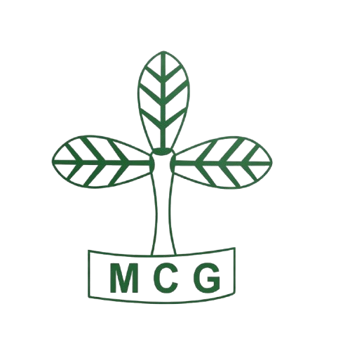

Multi Cipta Glass (MCG) menghadirkan solusi rekayasa, fabrikasi, dan instalasi Curtain Wall, ACP, Kaca Tempered, serta Kusen Aluminium berstandar tinggi.

Proyek Selesai
Pengalaman Industri
Standar Material SNI
Didukung tim engineering berpengalaman dan workshop fabrikasi mandiri untuk menjamin kualitas estetika dan struktural.
Pemotongan dan perakitan modul unitized maupun stick system dilakukan di workshop sendiri dengan mesin CNC berakurasi tinggi.
Menggunakan profil aluminium pilihan (Alexindo, YKK AP) serta kaca Asahimas/Mulia dengan garansi resmi ketahanan cuaca.
Setiap instalasi melalui pengujian ketahanan air guna memastikan bangunan aman dari risiko kebocoran.